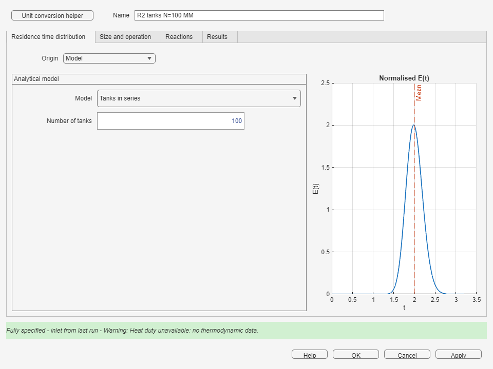
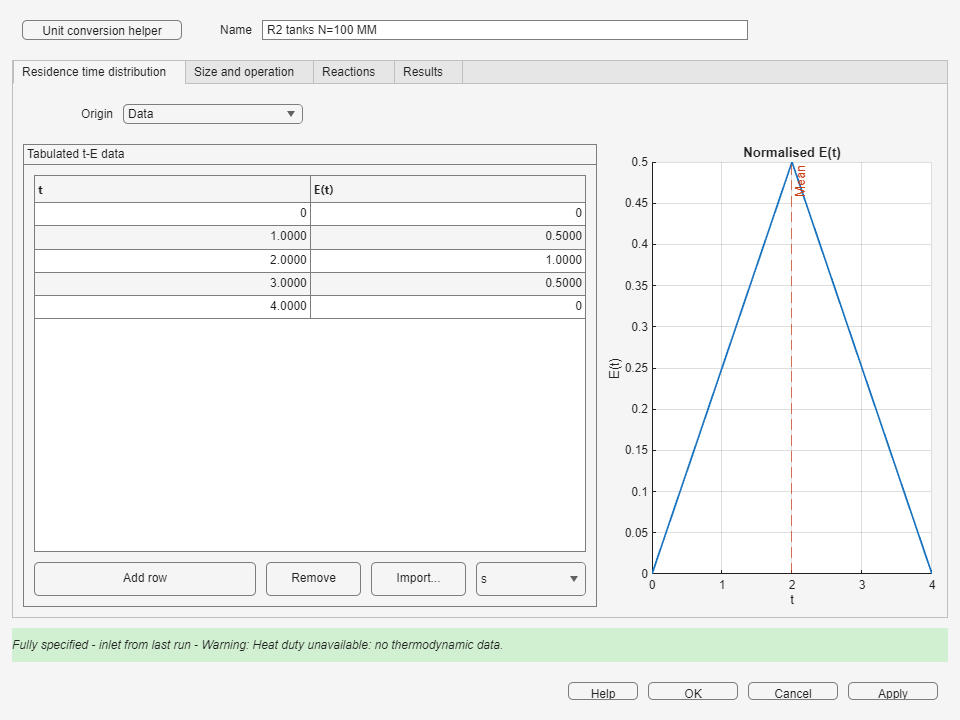
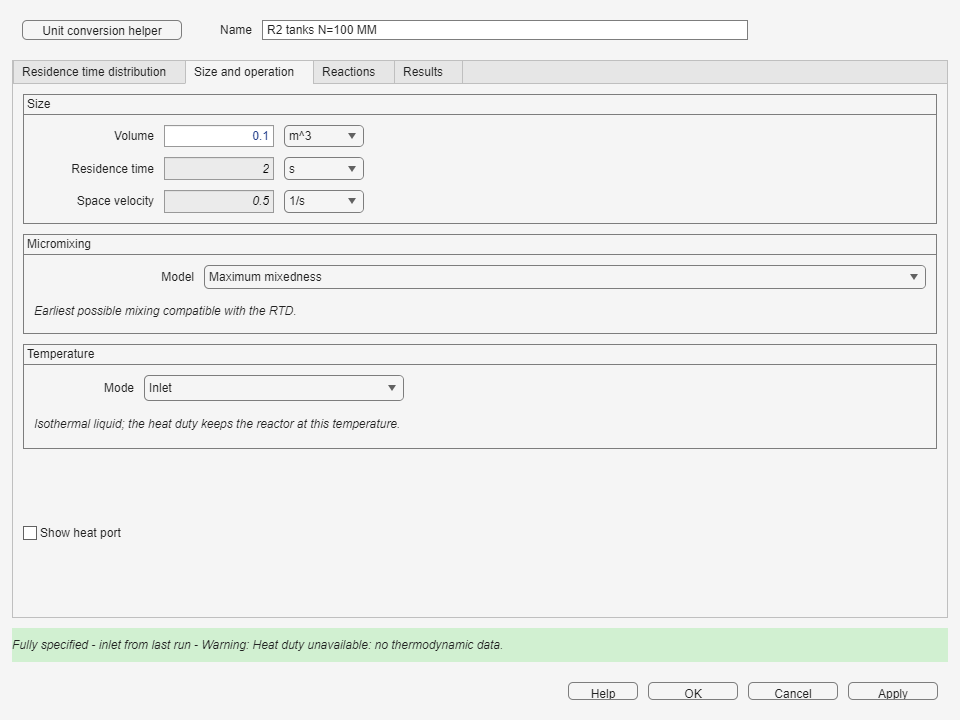
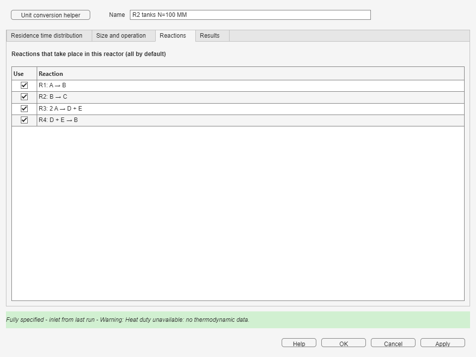
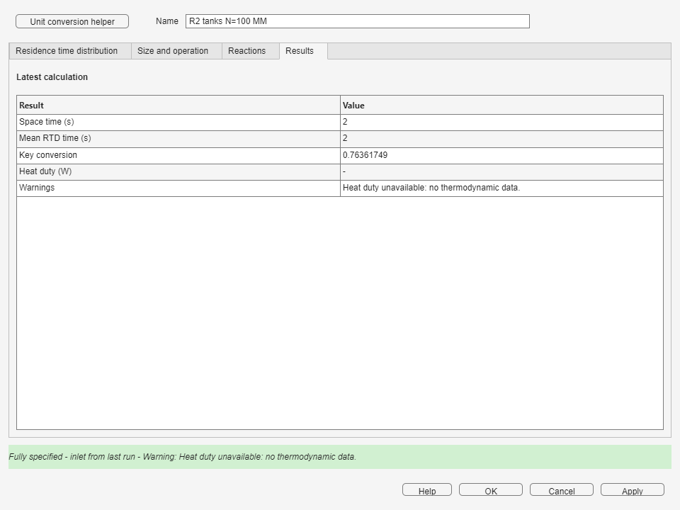

5. Non-ideal Reactor
Represent a real liquid reactor with its residence time distribution and a micromixing model while keeping the same Reactive System and material Streams as the rest of the flowsheet.
Before You Start
Define the common Reactive System, a liquid inlet Stream, and the RTD information available for this reactor. Connect Feed to Product as for a CSTR. The block icon identifies its RTD basis and displays SEG or MM for the chosen micromixing model.
Residence Time Distribution
Select the source that describes how long fluid elements remain in the reactor.
| Origin | Available input |
|---|---|
| Model | CSTR, PFR, Tanks in series with the number of tanks N, or Dispersion with Peclet number Pe and an open or closed boundary. |
| Data | A table of time and E(t). Use Add row, Remove, or Import... for a two-column file, then select the time unit. |
| Session | Press Browse... and select an app session that contains a valid RTD. |


Size
Use volume V, residence time τ, or space velocity with the displayed unit. For a modeled RTD, one independent size specification closes the relation between V, τ, space velocity, and inlet volumetric flow.
With Data or Session, the RTD mean fixes τ. Once the inlet flow is available, the block calculates V. If a user-specified V implies a different τ, the specifications conflict; the block does not stretch or compress the RTD to fit the requested volume.
Micromixing Model
Segregation treats each fluid element as a batch reactor that remains for its own residence time and mixes only at the outlet. Maximum mixedness follows the Zwietering concept: fluid mixes as early as possible while remaining compatible with the RTD.

Temperature and Heat
The current block is an isothermal liquid reactor. Choose the inlet temperature or specify a fixed reactor temperature. When thermodynamic data are available, results include the heat required to maintain that temperature. Select Show heat port to expose the same duty as a block output. Without thermodynamic data, no heat value is reported.
Reactions
Select the subset of Reactive System reactions that occurs in this reactor. Leaving every listed reaction selected uses the complete set, just as in a CSTR.

Results Tab
After a successful run, reopen the block and select Results. The table reports space time, the mean RTD time, conversion, heat when available, and any diagnostic warnings for the latest calculation.

Limitations
- Only liquid-phase operation is supported.
- Volumetric flow remains constant through the block.
- A material recycle loop cannot pass through a Non-ideal Reactor.
- The chosen micromixing model is the reported result; the block does not calculate an automatic interval between models.
Worked Example: January 2024 Exam
Example 51 contains two reactor trains at Q = 50 L/s with an inlet concentration of 1 mol/L. In each train, the first reactor is one tank with V = 50 L and the second is a 100-tank model with V = 100 L. Train a uses segregation and train b uses maximum mixedness.
- On the main screen, press Open example... in Flowsheet (Simulink).
- Select Non-ideal: January 2024 exam - two trains and press OK.
- Open one block in each train and compare the selected micromixing model and RTD settings.
- Press Run, then open Show results.
- Read the outlet Stream concentration after each reactor and compare the two final products.


Frequent Errors
| Symptom | What to do |
|---|---|
| The block is red and lists missing items | Select both the RTD origin and micromixing model, then complete the fields required by that origin. |
| Gas phase is reported | Use a liquid inlet Stream; gas-phase Non-ideal Reactor operation is not supported. |
| Size conflict | For Data or Session, clear the incompatible volume or correct the inlet flow. The RTD mean is not rescaled. |
| A recycle error identifies this block | Remove the loop through the Non-ideal Reactor. A recycle may remain on another branch that does not pass through it. |
Next Steps
Add the remaining process units, then review specification closure before running the complete flowsheet.